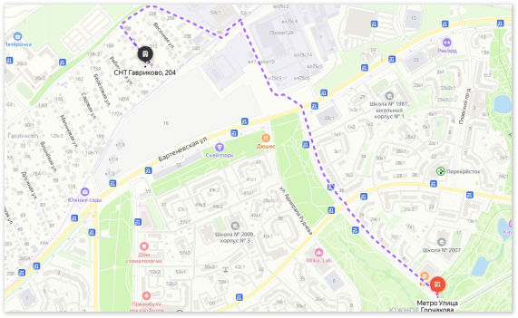
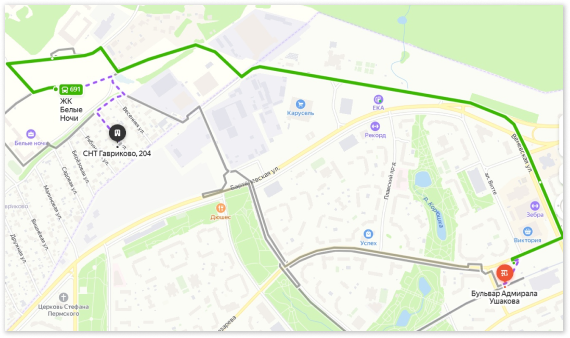

- Илья+7-906-757-27-76
- Елизавета+7-977-296-47-46
Илья
Павлович
Ведущий специалист в области коррекции опорно-двигательной системы методом ручного и инструментального воздействия.
Участник международных конференций, круглых и дискуссионных столов МАСОП (Международная ассоциация специалистов оздоровительных практик) на тему «грыжа позвоночника»
Специалист:
- в области Хиропрактики
- по локальному воздействия ударной волны
- по оздоровительным практикам.
- Костоправ
Елизавета
Андреевна
Специалист:
- по медицинскому, классическому, лимфодренажному, антицеллюлитному и спортивному массажу
- по оздоровительной Хиджаме
- по вопросам медикаментозного и БАД восстановления Выпускник Российской Ассоциации по спортивной медицине и реабилитации больных и инвалидов

Консультация по телефону
Вы списываетесь по ватсапу или телеграмму лично со специалистом, присылаете диагностики, и получаете мнение специалиста, касаемо вашего состояния здоровья, прогнозы и сроки восстановления, а также тактику работы индивидуально с вамиКонсультация очная на приеме
Преимущество очной консультации над заочной в том, что специалист проводит осмотр и функциональные тесты вашего организма, что позволяет более точно подобрать дальнейшую тактику работыМассаж
Классический, медицинский, спортивный и оздоровительный виды массажа, направлены на восстановление мышечного баланса и устранение мышечных болей и зажимов, которые в свою очередь могут послужить как причиной проблем с суставами и позвоночником, так и их следствием. Работа ведётся со следующими областями, длительностью от 45 минут: Спина+шея, верхние конечности, нижние конечности, живот. Дополнительно во время массажа применяется инструментальный массаж (доплата 500р): оздоровительный массаж банками и Ток-сен массажотдел
Массаж с применением мануальных техник
Отличается от обычного массажа последующей мобилизацией (мануальными техниками) суставов,включенных в выбранную областьотдел
Правка всего тела ручными техниками
Остеопатия, мануальная терапия, хиропрактика, костоправство - все это методы ручного воздействия на позвоночный столб, мышцы и суставы. Безукоризненное преимущество этой процедуры в ее целостности, работа ведётся с головы до кончиков пальцев ног, не упуская ни один сустав. Продолжительность до полутора часаИнструментальная правка позвоночника
Метод, не имеющий аналогии в мире, разработанный академиком И.Р. Касимовым. Данный метод является ведущим неоперационным средством борьбы с грыжами, протрузиями, листезами(смещениями) и сколиозом. Проводится с помощью резинового молоточка и деревянной проставки, взаимодействие идёт с межпозвонковых пространством и мягкими тканями. Продолжительность процедуры от полутора часаВыезд (исключительно суббота/воскресенье)
Выезд к вам на дом, со всем необходимым оборудованием. В зависимости от удаленности, стоимость уточняйте.


Услуги предоставляются по адресу:
Москва, снт Гавриково, Улица Солнечная, 204От м. Горчакова
От метро "улица Горчакова", последний вагон из центра, переходим дорогу, идём налево, проходим перекресток, за ним ещё один Т-образный перекресток, идём вдоль теплоэлектростанции до улицы Поляны, далее налево метров 60, видим табличку "СНТ Гавриково и СНТ Берёзки" (открытое КПП - улица поляны, 56), заходим идём прямо до поворота налево. Начинаются внутренние улицы, вам нужна вторая по счету - солнечная. В зимнее время проход открытый, в остальные сезоны ворота закрыты, для прохода позвоните на номер специалиста и вам откроют. Проходим, примерно по середине улицы, по правую руку дом 204
От м. Бульвар Адмирала Ушакова
От метро "бульвар адмирала Ушакова", первый вагон из центра, из выхода направо до автобусных остановок, автобус 691 до остановки "ЖК белые ночи", далее обходим крупную наземную парковку, проходим лесополосу и попадаем на территорию СНТ, перед вами внутренние улицы, слева направо по счету, вам нужна вторая - солнечная. Ворота в зимний сезон открыты, в другое время года проход закрыт, звоните на номер специалиста и вам откроют. Проходим, примерно по середине улицы, по правую руку дом 204
На авто:
Проезд через открытое КПП - улица поляны, 56 (крупная табличка СНТ Гавриково и СНТ Берёзки) проезжаем до поворота налево, начинаются внутренние улицы, вам нужна вторая по счету солнечная. В зимний сезон проезд открыт, в остальное время года закрыт, звоните специалисту вам откроют. Заезжаем, примерно по середине улицы по правую руку дом 204, парковка либо перед участком, там площадка на 1 машино-место перед двумя гаражами, либо по согласованию на участке.